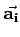
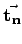
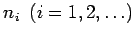
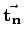
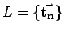
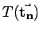
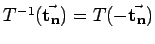
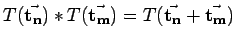
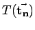
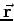

Inhalt Index DeskTop Bronstein

 Algebra und Diskrete Mathematik Klassische algebraische Strukturen Anwendungen von Gruppen Symmetriegruppen in der Kristallographie
Algebra und Diskrete Mathematik Klassische algebraische Strukturen Anwendungen von Gruppen Symmetriegruppen in der Kristallographie


In der Kristallographie wird das Parallelepiped, das unabhängig von der Art der Besetzung durch Atome oder Ionen die Elementarzelle eines Kristallgitters darstellt, durch drei, von einem gewählten Gitterpunkt ausgehende nichtkomplanare Basisvektoren  bestimmt.
Die unendliche geometrische Gitterstruktur ergibt sich durch Ausführung aller primitiven Translationen :
Dabei durchlaufen die Koeffizienten  alle ganzen Zahlen. Die Gesamtheit aller Translationen , die als Gittervektoren die Raumpunkte des Gitters  festlegen, bilden die Translationsgruppe T mit dem Gruppenelement , dem inversen Element  und der Multiplikationsregel . Für die Anwendung eines Gruppenelementes  auf den Ortsvektor  gilt: